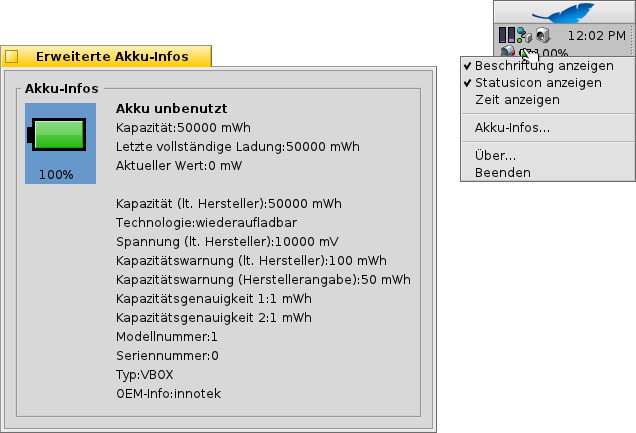

PowerStatus
PowerStatus
| Deskbar: | ||
| Ort: | /boot/system/apps/PowerStatus | |
| Einstellungen: | ~/config/settings/PowerStatus settings |
PowerStatus zeigt den Ladezustand des Akkus, ist also nur für Mobile Computer relevant. Wenn das Programm nicht schon läuft, kann man beim Start entscheiden, ob das Applet in einem Fenster laufen oder in die Deskbar installiert werden soll. Im Fenstermodus kann die Symbolgröße geändert werden, indem man die Fenstergröße anpasst, bevor man es am Replikanten-Symbol packt und auf den Desktop zieht.
Wo das Applet auch installiert ist, bedient wird es per Rechtsklick über ein Kontextmenü.
PowerStatus setzt übrigens eine funktionierende ACPI-Unterstützung voraus.
Das Kontextmenü beherbergt die folgenden Optionen:
| Zeigt den Ladezustand in Prozent oder als verbleibende Laufzeit. | ||
| Zeigt das Symbol des Applets. | ||
| Anzeige entweder in Prozent oder als verbleibende Laufzeit ( muss dazu aktiviert sein). | ||
| Zeigt weitere Informationen über den Akku. | ||
| Zeigt Informationen über PowerStatus. | ||
| Beendet das PowerStatus Applet. |
Ist aktiviert, wird der Ladezustand während des Aufladens in Klammern dargestellt.